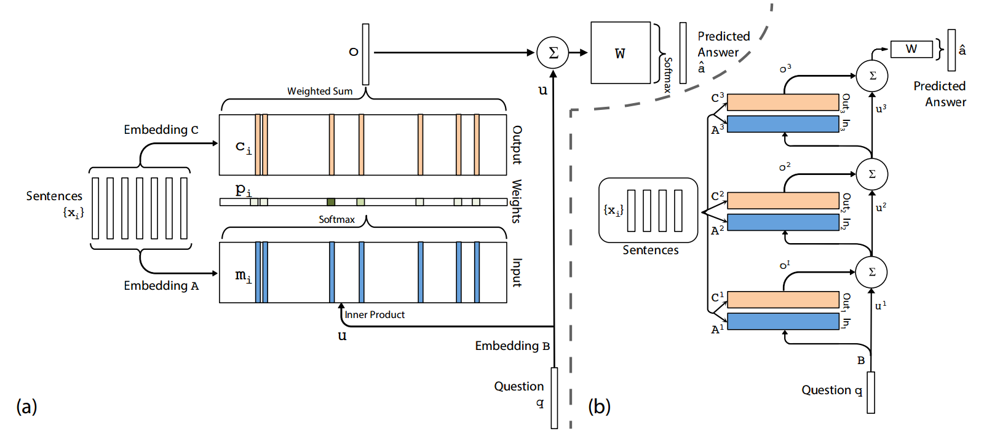
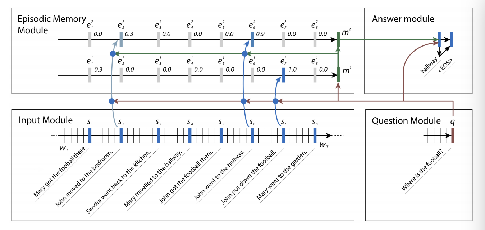
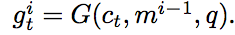
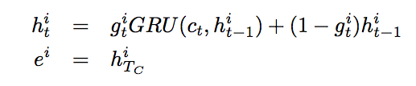
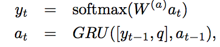
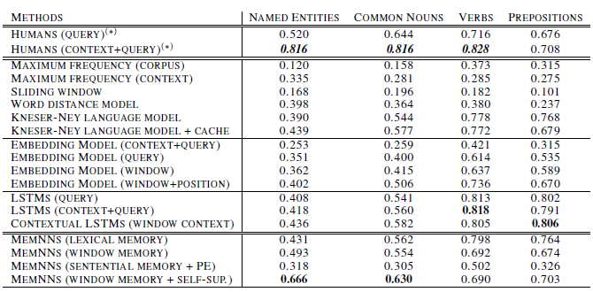
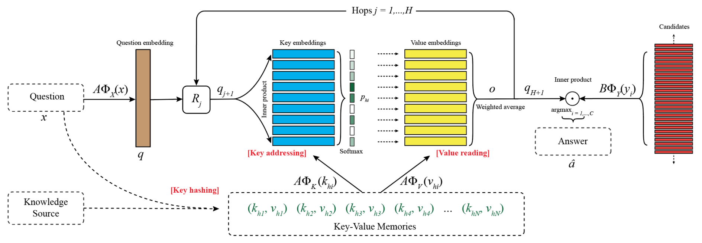

PaperWeekly 第十一期
引言
Memory Networks是由Facebook的Jason Weston等人提出的一个神经网络框架，通过引入长期记忆组件(long-term memory component)来解决神经网络长程记忆困难的问题。在此框架基础上，发展出许多Memory Networks的变体模型，本期精选了5篇Memory Networks相关的论文，分别如下：
1、Memory Networks
2、End-To-End Memory Networks
3、Ask Me Anything: Dynamic Memory Networks for Natural Language Processing
4、THE GOLDILOCKS PRINCIPLE: READING CHILDREN’S BOOKS WITH EXPLICIT MEMORY REPRESENTATIONS
5、Key-Value Memory Networks for Directly Reading Documents
Memory Networks
作者
Jason Weston, Sumit Chopra, Antoine Bordes
单位
Facebook AI Research
关键词
Question Answering, Memory Network
文章来源
ICLR 2015
问题
为解决长期记忆问题, 提出一类称为Memory Networks的模型框架, 基于该框架构造的模型可以拥有长期(大量)和易于读写的记忆。
模型和思路
Memory Networks可以理解为一种构造模型的框架, 该类模型由如下五部分组成:
1、记忆m: 模型记忆的表示,由一个记忆槽列表[m1-mi]组成,可被G,O组件读写
2、组件I (input feature map): 将模型输入转化模型内部特征空间中特征表示
3、组件G (generalization): 在模型获取新输入时更新记忆m，可以理解为记忆存储
4、组件O (output feature map): 根据模型输入和记忆m输出对应于模型内部特征空间中特征表示，可以理解为读取记忆
5、组件R(response): 将O组件输出的内部特征空间的表示转化为特定格式，比如文本。可以理解为把读取到抽象的记忆转化为具象的表示。
假设模型输入为x:
- 记忆的更新过程表示为 mH(x) = G(mi, I(X), m), ∀i, H(x)为选择记忆和遗忘机制
- 记忆的读取过程表示为 r = R(O(I(x), m))
再次强调Memory Networks是一类模型框架, 组件I,G,R,O可以使用不同的实现
资源
相关工作及引用
- Facebook AI的进一步工作, 基于Memory Networks框架和神经网络实现了End-To-End的训练学习
Sainbayar Sukhbaatar, Arthur Szlam, Jason Weston, Rob Fergus. End-To-End Memory Networks. arXiv:1503.08895
简评
文章提出了一个通用的解决长期记忆问题的算法框架, 框架中的每一个模块都可以变更成新的实现, 可以根据不同的应用场景进行适配。
End-To-End Memory Networks
作者
Sainbayar Sukhbaatar, Arthur Szlam, Jason Weston, Rob Fergus
单位
Dept. of Computer Science Courant Institute, New York University
Facebook AI Research
关键词
Memory Networks, End-to-end, Question Answer
文章来源
NIPS 2015
问题
本文提出了一个可以端到端训练的Memory Networks，并且在训练阶段比原始的Memory Networks需要更少的监督信息。
模型
本文提出的模型包括单层和多层两种情况。下面先介绍单层情况，
1、单层
如图(a)所示，输入的序列可以通过不同的Embedding矩阵A和C分别被表示成Input和Output向量的集合。同样的，通过Embedding矩阵B，我们将Question表示成一个向量u，向量u和Input向量集合中的每个向量计算内积，然后通过softmax得到一个概率向量p（attention过程），概率向量p中的每一个概率值表示每个Output向量对应输出的权重大小。通过p和Output向量集合，对Output中的向量进行加权求和得到输出向量o，将输出向量o和问题向量u相加，再最后通过一个权值矩阵W和softmax来预测最终的label。

2、 多层
多层的情况如图(b)所示，每层的输出向量oi和问题向量ui相加获得新的问题表示ui+1，然后重复上述单层的过程,直到最后一层通过softmax来预测label。
本文在bAbi数据集、Penn Treebank以及Text8三个数据集上进行实验，均取得了较好的实验效果。
资源
相关工作
Memory Networks
Neural Turing Machines
简评
本篇论文提出的模型是在Facebook提出的原始Memory networks基础上进行的改进。在Memory networks的框架下，将原来依赖于中间监督信息的非端到端Memory networks改进为端到端的Memory networks。基础模型之外，本文针对时序编码提出了一些有趣的trick，可作参考。
Ask Me Anything: Dynamic Memory Networks for Natural Language Processing
作者
Ankit Kumar, Ozan Irsoy, Peter Ondruska, Mohit Iyyer, James Bradbury, Ishaan Gulrajani, Victor Zhong, Romain Paulus, Richard Socher
单位
MetaMind
关键词
Memory Networks, Neural Networks, Question Answering
来源
arXiv
问题
Question Answering: 给定一段Context，一个与此Context相关的Question，利用模型生成一个单词的Answer。
模型
下图给出了dynamic memory networks的框架。

首先Context和Question都经过Gated Recurrent Unit(GRU)转换成成vector形式，分别作为episodic memories e和m储存下来。e代表的是一连串vectors，Context中每句话都会被转换成一个e vector，然而Question只会被转换成一个m vector。
下一步是episodic memory updates，在每一个episode, 每一个e vector会和m计算一个attention，本文中使用一个two layer feed forward neural network计算attention score。然后利用attention scores来update episodic memories。


输出答案也采用了一个GRU decoder

这里的a0是最后一个memory state m。
资源
相关工作
Memory Networks
Eng-to-End Memory Networks
The Goldilocks Principle: Reading Children’s Books with Explicit Memory Representations
简评
总体来说这是一篇很有趣的文章。其中应用了episodically update memory的想法，期望模型能够借此学到一些logical reasoning的能力。并且模型中多次用的GRU，每一层都使用GRU的encoding或者decoding，比较有趣。
然后我认为本文的写作有一些问题，比如我自始至终也没有找到e的下标究竟代表什么，我的理解是每一句话都被encode成一个e作为episodic memory，那么每次Update 其中一个e都要经过所有其他的e是为了更好的融合所有context sentences的信息吗？looks reasonable to me.
那么每一层的hidden states h究竟又是什么？上一层的hidden state如何更新到下一层？文章中似乎没有给出明确的公式，也没有在model figure中展示出来，似乎写作不够明确。既然e是有h穿过层层GRU得到，我会揣测下一层的h是上一层e的一个function。总之感觉model这一块的解释不够清晰到位，变量太多有些混乱。
然而总体来说，我觉得本文还是非常值得一读的。
THE GOLDILOCKS PRINCIPLE: READING CHILDREN’S BOOKS WITH EXPLICIT MEMORY REPRESENTATIONS
作者
Felix Hill, Antoine Bordes, Sumit Chopra & JasonWeston
单位
Facebook AI Research
关键词
Memory Networks,self-supervised training,window-based memories,The Children’s Book Test(CBT)
文章来源
ICLR2016
问题
本文对于语言模型（RNN/LSTM/Memory Network生成）到底能够多好或者在多大程度上表示The Children’s Book做了一项测试。测试结果表面Memor Network上的效果最好。
模型
文中主要对比了一系列state-of-the-art的模型，每个用不同的方式对之前已经读过的文本进行编码，然后进行CBT评比。
实验中使用的模型以及结果如下：

CBT简介：数据来自Project Gutenburg所创建的数据集，里面的内容都选自儿童书籍。每20句话产生一个问题，让不同的语言模型去进行预测，看谁预测的效果更好。
问题产生于20句话中的某一句话抠掉一个词A。候选集产生分为如下两步:
(1)从构成20句话的词表中随机选出和抠掉词A具有相同词性的词集合C 。
(2)从C中随机抽选10个词作为答案的备选集。
实验最后在CNN QA的语料上进行测试，在新闻文章中识别命名实体，得到的准确率能到
69.4%
资源
n-gram language model:the KenLM toolkit (Scalable modified Kneser-Ney language
model estimation.)
相关工作
(1) MN:arXiv2015,Bordes,Large-scale simple question answering with memory networks.文中关于end to end的训练方法以及memory network的模型主要来自本篇
(2) NIPS2015,Sukhbaatar,End-to-end memory networks.
(3)EMNLP2015,Rush,A neural attention model for abstractive sentence summarization. Contextual LSTM模型的参考文章
简评
本文提供了一种测试语言模型效果的测试方法，这对于语言模型的评判做出了贡献。
在做实验过程中，作者还发现在单层记忆表示中文本被编码的数量对结果有很大的影响：存在一个范围，使得单个词信息和整个句子的信息都得以较好的保留。
Key-Value Memory Networks for Directly Reading Documents
作者
Alexander H. Miller, Adam Fisch, Jesse Dodge, Amir-Hossein Karimi, Antoine Bordes, Jason Weston
单位
Facebook AI Research
Language Technologies Institute, Carnegie Mellon University
关键词
Memory Networks, Key-Value, Question Answering, Knowledge Bases
文章来源
arXiv 2016
问题
鉴于知识库有知识稀疏、形式受限等问题，本文提出了一种可以通过直接读取文档来解决QA问题的新方法Key-Value Memory Networks。
模型
如下图所示，Key-Value Memory Networks(KV-MemNNs)模型结构与End-to-end Memory Networks(MemN2N)基本相同，区别之处在于KV-MemNNs的寻址（addressing）阶段和输出阶段采用不同的编码（key和value）。

本文主要提出了以下几种Key-value方法：
- KB Triple
针对知识库中的三元组(subject, relation, object),将subject和relation作为Key，object作为Value。 - Sentence Level
将文档分割成多个句子，每个句子即作为Key也作为Value，该方法与MemN2N相同。 - Window Level
以文档中每个实体词为中心开一个窗口，将整个窗口作为Key，中间的实体词作为Value。 - Window + Center Encoding
该方法与Window Level基本相同，区别之处在于中心实体词与窗口中的其他词采用不同的Embedding。 - Window + Titile
很多情况下文章的题目可能包含答案，因此在上述提出的Window方法基础上，再添加如下Key-value对：Key为窗口，Value为文档对应的title。
本文为了比较使用知识库、信息抽取和直接采用维基百科文档方法之间的效果，构建了新的语料WIKIMOVIES。实验结果表明，KV-MemNNs直接从文档读取信息比信息抽取方法的效果好，却仍比直接利用知识库的方法差不少。其中几种Key-Value方法中，“Window + Center Encoding”方法效果最好。此外，本文还在WikiQA上进行实验，验证了KV-MemNNs的效果。
资源
- [WikiQA]
(https://www.microsoft.com/en-us/download/details.aspx?id=52419) - [WikiMovies]
(https://research.facebook.com/research/babi/)
相关工作
Memory Networks
End-TO-End Memory Networks
The Goldilocks Principle: Reading Children’s Books with Explicit Memory Representations
简评
本篇论文提出了一个在新的Memory Networks变体Key-Value Memory Networks，旨在探索在QA过程中，如何消除采用知识库和自由文本（维基百科）之间的效果差距（gap），并为此构建了一个新的数据集WikiMovies。
总结
长程记忆（long-term memory）问题一直是深度学习中的一个难点，Attention机制就是解决这一问题的经典方法。本文介绍的几篇Memory Networks试图通过构建长期存储记忆组件来解决过去神经网络无法存储过长内容的问题。如何存储大量的外部信息以及如何利用这些外部信息推断是Memory Networks乃至很多NLP任务的难点。本期引入的这几篇论文中，Memory Networks提出了一个整体的框架，End-To-End Memory Networks使memory networks可以端到端的训练学习。Key-Value Memory Networks主要解决外部信息如何存储表示，而THE GOLDILOCKS PRINCIPLE这篇论文则在推理方面有所创新，直接利用attention的打分来预测答案。目前深度学习方法中，无论是存储更新长期记忆的方法还是结合长期记忆进行推理的方法都还很初级，仍需诸君努力前行。
以上为本期Paperweekly的主要内容，感谢cain、destinwang、zeweichu、chunhualiu等四位同学的整理。